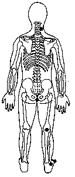

Sequência da Energia Descendente Posterior.
Revitaliza a energia da Função da Bexiga. Alivia dores de cabeça e estresse lombar. Dissipa desconfortos musculares e das pernas.
|
M.e. no lado direito do pescoço entre o crânio e os ombros TSE 12; M.d. base da coluna (cóccix).
M.e.
permanece no lado direito do pescoço
entre o crânio e os ombros TSE 12;
M.d.
deslocar para a região posterior do joelho direito (onde o joelho
se dobra
)
M.e. permanece no lado direito do pescoço entre o crânio e os ombrosTSE 12; M.d. deslocar para a face externa do tornozelo direito entre o osso do tornozelo e o calcanhar TSE 16.
M.e. permanece no lado direito do pescoço entre o crânio e os ombros TSE 12; M.d. deslocar para o quinto dedo do pé (mínimo) direito segurando com os dedos indicador e o polegar da mão. |

|